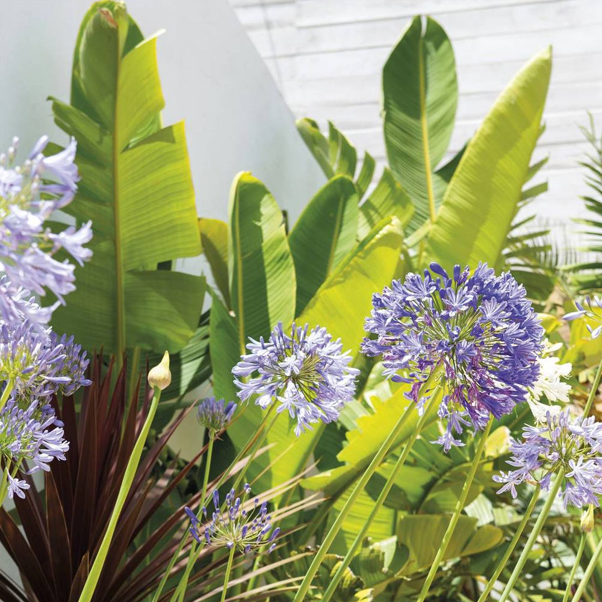
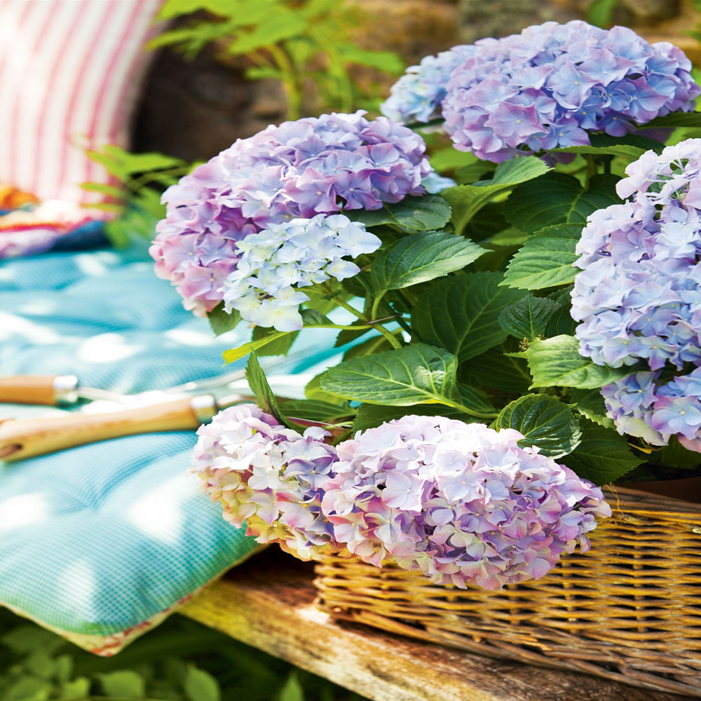
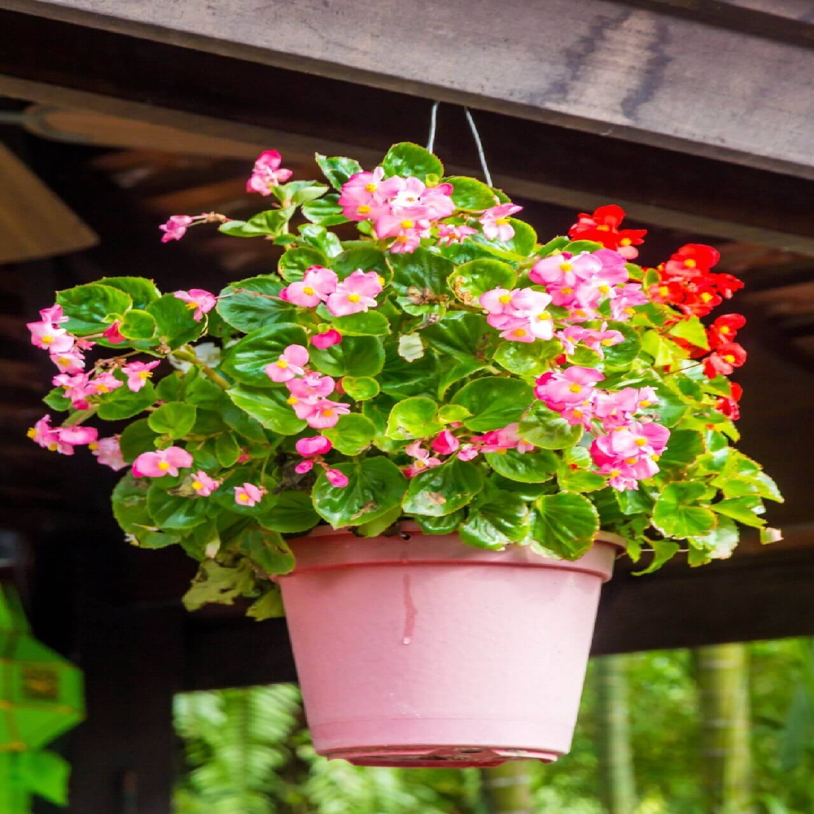
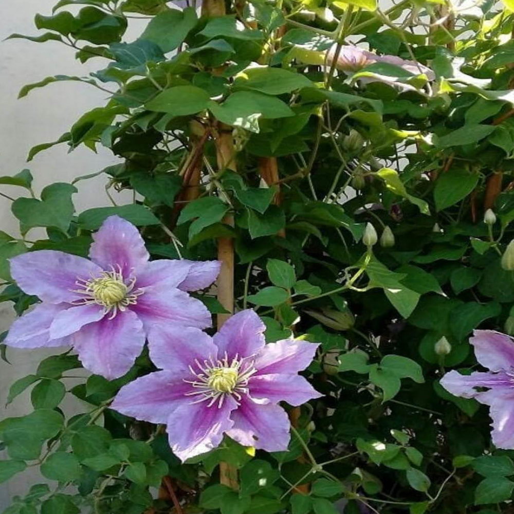

Rosas
Las rosas son arbustos perennes del género Rosa. Sus flores varían en color desde el blanco hasta el rojo oscuro y son conocidas por su fragancia y belleza
Precio: $ 85.00

Girasol
El girasol (Helianthus annuus) es una planta anual conocida por sus grandes flores amarillas que giran para seguir al sol. Son nativas de América y se cultivan por sus semillas comestibles
Precio: $ 80.00

Lavanda
La lavanda (Lavandula) es un género de plantas aromáticas con flores de color púrpura, azul o lilas. Es conocida por su fragancia relajante y se utiliza en aceites esenciales y productos de cuidado personal
Precio: $ 60.00

Hortencia
Las flores de muchas hortensias actúan como indicadores naturales de pH, luciendo flores azules cuando el suelo es ácido y rosadas cuando el suelo es alcalino
Precio: $ 28.00